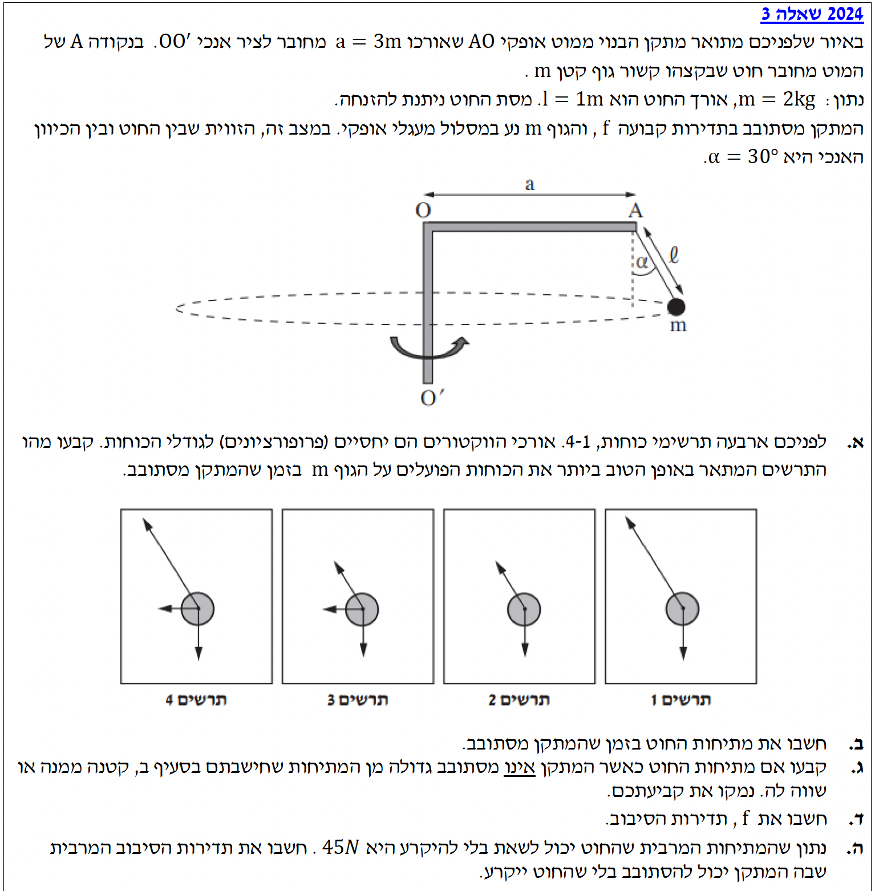

פתרון בגרות בפיזיקה - מכניקה 2024 שאלה 3
הכנת פתרון מוסבר לתלמידים
ניתוח כוחות ותנועה מעגלית אופקית של מטוטלת קונית פתרון מודרך, צעד-אחר-צעד
עודכן:
--- --:--:--
שלום תלמידים יקרים! 👋
בשאלה זו אנו פוגשים מערכת שמסתובבת בתנועה מעגלית אופקית (תנועה קונית מורחבת). ניגש לבעיה שלב אחר שלב, נקפיד על תרשים כוחות נקי, ונשתמש בחוקי ניוטון.
זכרו: אין כוחות מדומים (כמו "כוח צנטריפוגלי") במערכת ייחוס אינרציאלית – רק כוחות מגע וכוח הכובד.

[תמונת השאלה המקורית]
לא נמצאה תמונה בשם question-image.png באותה תיקייה.
מה נתון: גוף בעל מסה \( m \) נע במסלול מעגלי אופקי כשהוא קשור לחוט המפעיל עליו מתיחות. הגוף נמצא באוויר (אין משטח תחתיו).
מה מחפשים: לקבוע איזה מבין ארבעת התרשימים (1, 2, 3 או 4) מתאר באופן הטוב ביותר את הכוחות האמיתיים הפועלים על הגוף, גם מבחינת כיוון וגם מבחינת גודל יחסי.
עקרונות בשימוש:
1. חוקי ניוטון: התאוצה בכל ציר שנבחר פרופורציונאלית לשקול הכוחות בציר הזה (\( \Sigma F = ma \)).
2. אי-תלות בין צירים (גלילאו): ניתן לנתח את הכוחות והתנועה בכל ציר בנפרד, ללא השפעה הדדית ביניהם.
3. שיווי משקל בציר האנכי: מכיוון שהתנועה היא אופקית בלבד, אין תאוצה בציר האנכי, ולכן שקול הכוחות בציר \( y \) חייב להיות אפס (\( \Sigma F_y = 0 \)).
ניתוח ופתרון:
ננתח את האינטראקציות של הגוף (המסה \( m \)) עם סביבתו:
- כדור הארץ: מפעיל כוח כובד כלפי מטה (\( mg \)).
- החוט: מפעיל מתיחות לאורך החוט, כלפי מעלה ופנימה (\( T \)).
אין שום גוף אחר שנוגע במסה, לכן ישנם אך ורק שני כוחות הפועלים על הגוף. עובדה זו פוסלת מיד את תרשימים 3 ו-4, המציגים חץ נוסף עבור כוח שלישי שפשוט אינו קיים במציאות.
כעת, נכריע בין התרשימים הנותרים לפי אורך הווקטורים:
כדי שהגוף לא יאיץ בציר האנכי, הרכיב האנכי של המתיחות (\( T_y \)) חייב להיות שווה בדיוק לכוח הכובד (\( mg \)). מבחינה גרפית, המשמעות היא שההיטל האנכי של חץ המתיחות חייב להיות באותו אורך כמו החץ של \( mg \).
- בתרשים 1: החץ של המתיחות ארוך מדי. ההיטל האנכי שלו גדול באורכו מ-\( mg \), ולכן שקול הכוחות האנכי מכוון כלפי מעלה (מה שהיה גורם לגוף להאיץ מעלה).
- בתרשים 2: החץ של המתיחות מצויר בפרופורציה הנכונה, כך שההיטל האנכי שלו אכן שווה באורכו ל-\( mg \) ומאזן את כוח הכובד במלואו (הגוף נשאר באותו גובה).
התרשים המתאר נכונה את הכוחות הוא תרשים 2.
💡 טיפ מורה 1: חשיבות אורך הווקטורים
כל הכבוד למי ששם לב לאורך החצים! בבגרויות רבות לא מספיק לזהות רק את הכיוון של הכוחות, אלא יש לבחון גם את הגודל היחסי שלהם. אם גוף נמצא בשיווי משקל בציר מסוים, החצים (או הרכיבים שלהם) באותו ציר חייבים להיות שווים באורכם בתרשים הכוחות. כפי שראינו בזכות עקרון אי-התלות של גלילאו, אנו רשאים לבחון את הציר האנכי בלבד כדי להסיק מסקנות על אורכי הווקטורים בו.
💡 טיפ מורה 2: "כוח צנטריפטלי" אינו כוח חדש
תפיסה שגויה ונפוצה מאוד בקרב תלמידים היא המחשבה שקיים בטבע כוח מיוחד הנקרא "כוח צנטריפטלי" (או רדיאלי), ושצריך לצייר אותו בתרשים ככוח שלישי נוסף. למעשה, אין כוח עצמאי כזה! המונח "צנטריפטלי" מתאר רק תפקיד שממלא כוח קיים (או רכיב שלו). התפקיד הזה הוא לדאוג לשינוי כיוון המהירות כך שהגוף ינוע במסלול מעגלי. בתרשים כוחות חופשי, אנו מציירים אך ורק כוחות מגע ושדות (כמו המתיחות והכובד), ובמקרה שלנו, הרכיב האופקי של המתיחות פשוט "ממלא את התפקיד" של הכוח הצנטריפטלי.
מה נתון:
מסה \( m = 2\text{ kg} \)
זווית החוט עם האנך \( \alpha = 30^\circ \)
תאוצת הכובד \( g = 10\text{ m/s}^2 \)
(הנתונים ב-MKS ולכן אין צורך בהמרה).
מה מחפשים: את גודל מתיחות החוט, אותה נסמן באות \( T \).
נוסחאות ועקרונות בשימוש:
החוק השני של ניוטון בציר האנכי (ציר \( y \)). מכיוון שהגוף חג במעגל אופקי, אין לו תנועה (ולכן אין תאוצה) בציר האנכי. גודל המהירות האנכית נשאר אפס.
\( \Sigma F_y = m a_y \) \(\Rightarrow\) \( \Sigma F_y = 0 \)
תרשים כוחות וחישוב:
נפרק את מתיחות החוט לרכיבים. הרכיב האנכי של המתיחות הוא \( T_y = T \cos\alpha \). כוח הכובד פועל כלפי מטה בשיעור \( mg \).
נקבע את הכיוון החיובי של ציר \( y \) כלפי מעלה. נרשום את משוואת הכוחות:
\begin{aligned}
\Sigma F_y &= 0 \\
T \cos\alpha - mg &= 0 \\
T \cos\alpha &= mg \\
T &= \frac{mg}{\cos\alpha}
\end{aligned}
נציב את הנתונים ונעגל ל-3 ספרות מהותיות:
\begin{aligned}
T &= \frac{2 \cdot 10}{\cos(30^\circ)} \\
T &= \frac{20}{\frac{\sqrt{3}}{2}} \\
T &= \frac{40}{\sqrt{3}} \approx 23.094\text{ N}
\end{aligned}
\( T = 23.1\text{ N} \)
📐 טיפ מורה:
שימו לב כיצד קבענו את הצירים: ציר אופקי (רדיאלי) פנימה לעבר מרכז הסיבוב, וציר אנכי. תמיד תבחרו את הצירים כך שציר אחד יהיה בכיוון התאוצה (כאן התאוצה הרדיאלית היא אופקית) והציר השני מאונך לו (בו אין תאוצה).
מה נתון: המערכת כעת איננה מסתובבת. הגוף תלוי במנוחה באוויר. מסעיף ב' מצאנו כי המתיחות בזמן סיבוב היא \( T_{\text{rot}} = 23.1\text{ N} \).
מה מחפשים: לקבוע ולנמק האם מתיחות החוט במצב מנוחה (נקרא לה \( T_{\text{rest}} \)) גדולה, קטנה או שווה למתיחות שחישבנו בסעיף ב'.
נוסחאות ועקרונות בשימוש:
החוק הראשון של ניוטון (התמדה). כאשר גוף במנוחה מוחלטת, שקול הכוחות עליו הוא אפס.
\( \Sigma F = 0 \)
חישוב והשוואה:
כאשר המערכת אינה מסתובבת, הגוף תלוי אנכית מטה בהשפעת כוח הכובד. אין סטייה לזווית \( \alpha \). החוט מכוון בדיוק כלפי מעלה במישור האנכי.
נרשום משוואת כוחות בציר ה-y במצב המנוחה:
\begin{aligned}
\Sigma F_y &= 0 \\
T_{\text{rest}} - mg &= 0 \\
T_{\text{rest}} &= mg = 2 \cdot 10 = 20\text{ N}
\end{aligned}
כעת נשווה לתוצאה מסעיף ב':
\[ T_{\text{rest}} = 20\text{ N} \quad < \quad T_{\text{rot}} \approx 23.1\text{ N} \]
מתיחות החוט במצב מנוחה קטנה ממתיחות החוט בזמן סיבוב.
⚖️ טיפ מורה להבנה אינטואיטיבית:
בזמן מנוחה, על החוט לאזן רק את כוח הכובד נטו. בזמן סיבוב בזווית, רק האחוז (הרכיב) האנכי של החוט פועל מול הכובד. לכן, כדי שאותו רכיב יספיק כדי לקזז את \( mg \), על המתיחות הכללית של החוט לגדול (כי \( \cos \alpha < 1 \), ולכן מחלקים את \( mg \) בשבר קטן מאחד).
מה נתון:
אורך מוט אופקי \( a = 3\text{ m} \)
אורך החוט \( l = 1\text{ m} \)
זווית \( \alpha = 30^\circ \)
מתיחות (מסעיף ב') \( T = \frac{40}{\sqrt{3}}\text{ N} \approx 23.094\text{ N} \)
מסה \( m = 2\text{ kg} \)
מה מחפשים: את תדירות הסיבוב \( f \) (ביחידות Hz).
נוסחאות מהדף:
החוק השני של ניוטון עבור ציר תנועה מעגלי ונוסחאות הקינמטיקה של תנועה מעגלית:
\( \Sigma F_x = m a_R \)
\( a_R = \omega^2 R \)
\( \omega = 2\pi f \)
פתרון צעד-אחר-צעד:
שלב 1: מציאת רדיוס הסיבוב \( R \)
רדיוס הסיבוב אינו אורך החוט, אלא המרחק האופקי של המסה מציר הסיבוב המרכזי (\( OO' \)). המרחק הזה מורכב מאורך המוט \( a \) ועוד ההיטל האופקי של החוט \( l \sin\alpha \).
\begin{aligned}
R &= a + l \sin\alpha \\
R &= 3 + 1 \cdot \sin(30^\circ) \\
R &= 3 + 1 \cdot 0.5 = 3.5\text{ m}
\end{aligned}
שלב 2: משוואת הכוחות בציר הרדיאלי
הכוח היחיד שפועל בכיוון המרכז (פנימה) הוא הרכיב האופקי של המתיחות, \( T_x = T \sin\alpha \). נקבע את הכיוון החיובי של ציר \( x \) פנימה לעבר מרכז המעגל ונציב את הקשר \( \omega = 2\pi f \):
\begin{aligned}
\Sigma F_x &= m a_R \\
T \sin\alpha &= m \cdot \omega^2 R \\
T \sin\alpha &= m \cdot (2\pi f)^2 \cdot R \\
T \sin\alpha &= m \cdot 4\pi^2 f^2 \cdot R
\end{aligned}
שלב 3: חילוץ הנעלם והצבה
כעת, נציב את כל הנתונים המספריים שידועים לנו ונבודד את \( f^2 \):
\begin{aligned}
23.094 \cdot \sin(30^\circ) &= 2 \cdot 4\pi^2 \cdot f^2 \cdot 3.5 \\
23.094 \cdot 0.5 &= 28\pi^2 \cdot f^2 \\
11.547 &= 28 \cdot \pi^2 \cdot f^2 \approx 276.35 \cdot f^2 \\
f^2 &= \frac{11.547}{276.35} \approx 0.04178 \\
f &= \sqrt{0.04178} \approx 0.2044\text{ Hz}
\end{aligned}
\( f = 0.204\text{ Hz} \)
🔍 טיפ מורה:
שימו לב שלב המפתח כאן הוא זיהוי רדיוס הסיבוב הנכון. במתקנים מורכבים כאלו, הרדיוס הוא לא סתם אורך חוט. תמיד סמנו את ציר הסיבוב והורידו אליו אנך מהגוף - האורך של האנך הזה הוא רדיוס הסיבוב (\( R \)).
מה נתון:
החוט יכול לשאת מתיחות מרבית של \( T_{\max} = 45\text{ N} \) מבלי להיקרע.
שימו לב: כשהמתקן מסתובב מהר יותר, הזווית \( \alpha \) משתנה ואיננה \( 30^\circ \). נקרא לה \( \alpha_{\max} \).
מה מחפשים: את תדירות הסיבוב המרבית המותרת \( f_{\max} \) בה המתיחות מגיעה בדיוק ל- \( 45\text{ N} \).
נוסחאות ועקרונות בשימוש:
המשוואות מסעיפים קודמים עדיין תקפות עם המשתנים החדשים:
\( T_{\max} \cos\alpha_{\max} = mg \)
\( T_{\max} \sin\alpha_{\max} = m \cdot 4\pi^2 f_{\max}^2 \cdot R_{\max} \)
פתרון צעד-אחר-צעד:
שלב 1: מציאת הזווית במצב מתיחות מרבית
ממשוואת ציר \( y \) (הגוף לא מאיץ אנכית):
\begin{aligned}
T_{\max} \cos\alpha_{\max} &= mg \\
45 \cdot \cos\alpha_{\max} &= 2 \cdot 10 = 20 \\
\cos\alpha_{\max} &= \frac{20}{45} = \frac{4}{9}
\end{aligned}
נחשב גם את סינוס הזווית (נציג ערך מספרי להתקדמות נוחה):
\begin{aligned}
\alpha_{\max} &= \arccos\left(\frac{4}{9}\right) \approx 63.61^\circ \\
\sin\alpha_{\max} &= \sin(63.61^\circ) \approx 0.8958
\end{aligned}
שלב 2: מציאת רדיוס הסיבוב החדש
\begin{aligned}
R_{\max} &= a + l \sin\alpha_{\max} \\
R_{\max} &= 3 + 1 \cdot 0.8958 = 3.8958\text{ m}
\end{aligned}
שלב 3: מציאת התדירות המרבית
נציב במשוואת ציר ה-\( x \):
\begin{aligned}
T_{\max} \sin\alpha_{\max} &= m \cdot 4\pi^2 f_{\max}^2 \cdot R_{\max} \\
45 \cdot 0.8958 &= 2 \cdot 4\pi^2 \cdot f_{\max}^2 \cdot 3.8958 \\
40.311 &= 8\pi^2 \cdot 3.8958 \cdot f_{\max}^2 \\
40.311 &\approx 307.6 \cdot f_{\max}^2 \\
f_{\max}^2 &= \frac{40.311}{307.6} \approx 0.1310 \\
f_{\max} &= \sqrt{0.1310} \approx 0.362\text{ Hz}
\end{aligned}
\( f_{\max} = 0.362\text{ Hz} \)
⚠️ טיפ מורה:
אחת הטעויות הנפוצות בסעיפים של שינוי מצב (כמו הגדלת תדירות), היא להניח שמשתנים מסוימים נשארים קבועים כאשר הם לא! אי אפשר להשאיר את הזווית על \( 30^\circ \) ולהגדיל רק את \( T \). מדוע? כי המשוואה בציר \( y \) (\( T \cos\alpha = mg \)) מחייבת שאם \( T \) גדל, אזי \( \cos\alpha \) חייב לקטון (כלומר הזווית \( \alpha \) חייבת לגדול) כדי שהמכפלה עדיין תהיה שווה למשקל הגוף (\( mg \)) שהוא קבוע.